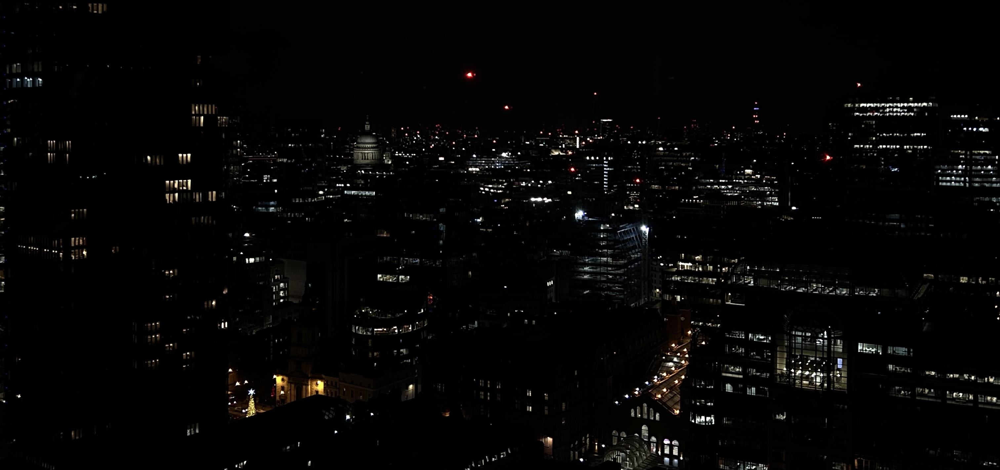

Ao longo dos 7 curtos dias de viagem, andei sempre ao redor de
Londres.
Uma vez que não me aventurei para longe de Londres, deixei ainda
muitos lugares por explorar. Porém, passeei por:
E os mais conhecidos:
|  |
Dentro de tantos, o que mais me marcou foi Spitafields, onde passei o meu Ano Novo. |